黑胡桃、墨褐皮和原色亚麻。室内画面由 Blender 实景渲染，动线图取自同一模型。
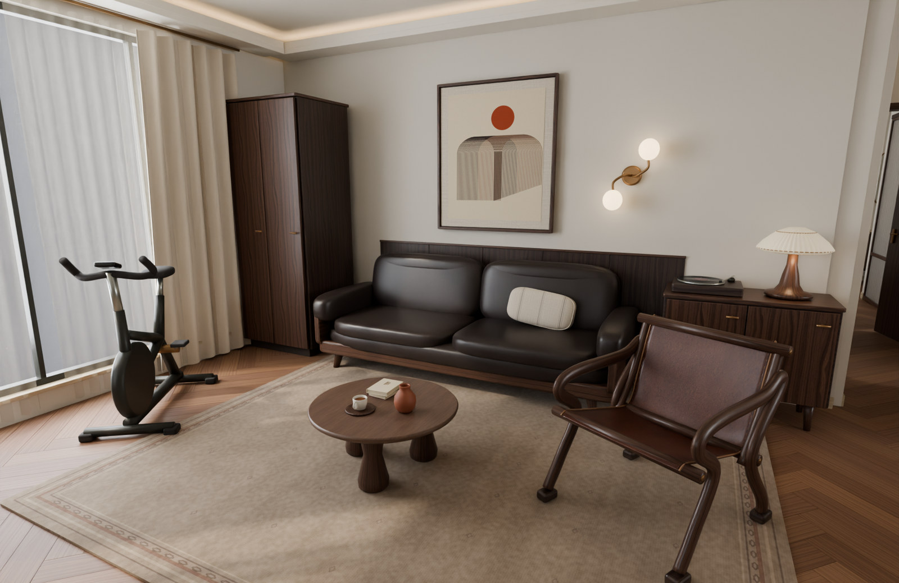
墨褐皮双座、鞍皮弯木椅与薄纱后的南窗。
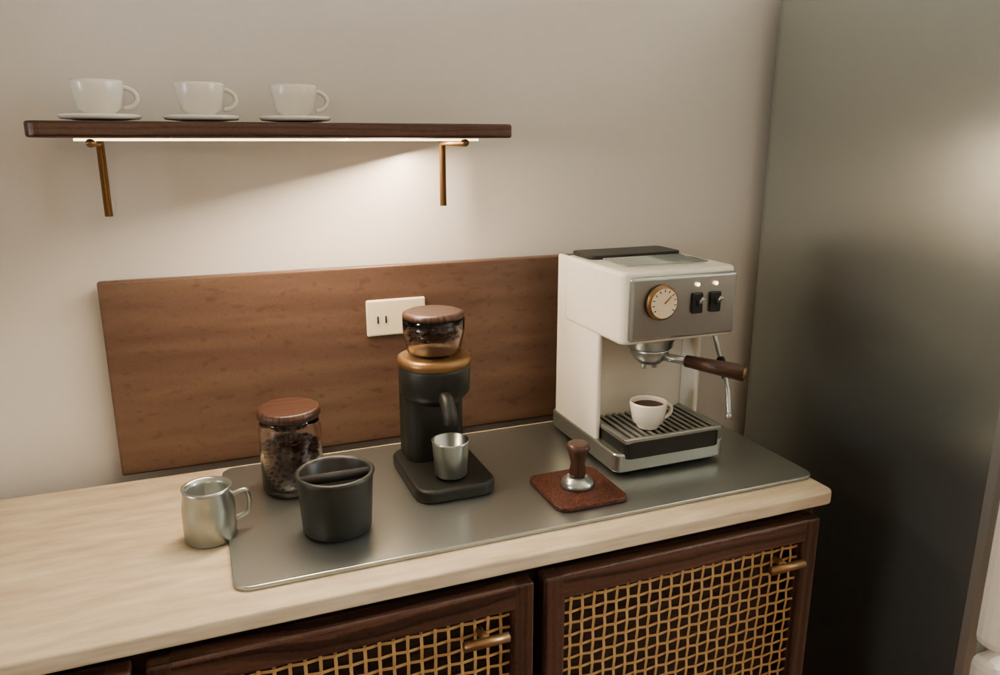
咖啡机在靠厨房的一端。胡桃木层板收杯，拉丝钢托板接住咖啡粉和水滴。
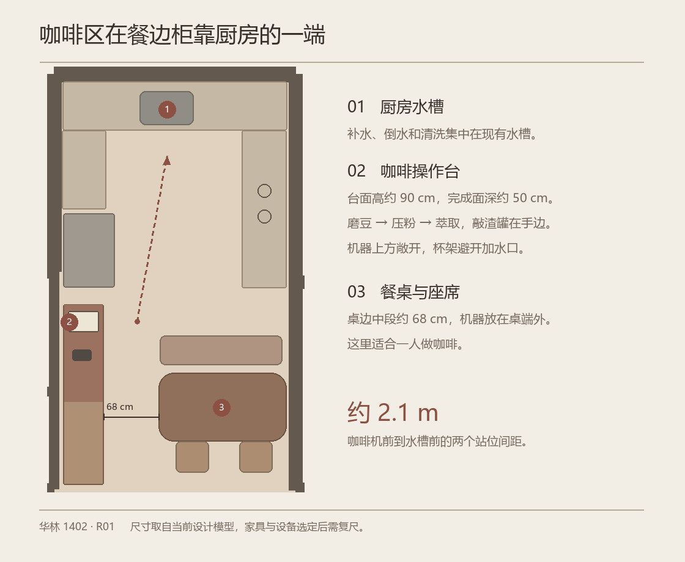
根据当前模型绘制。使用咖啡机与水槽的两个站位相距约 2.1 米。
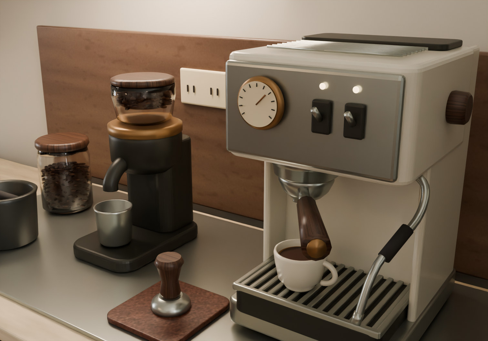
从磨豆机到压粉垫、冲煮头，手柄前方留出操作空间。
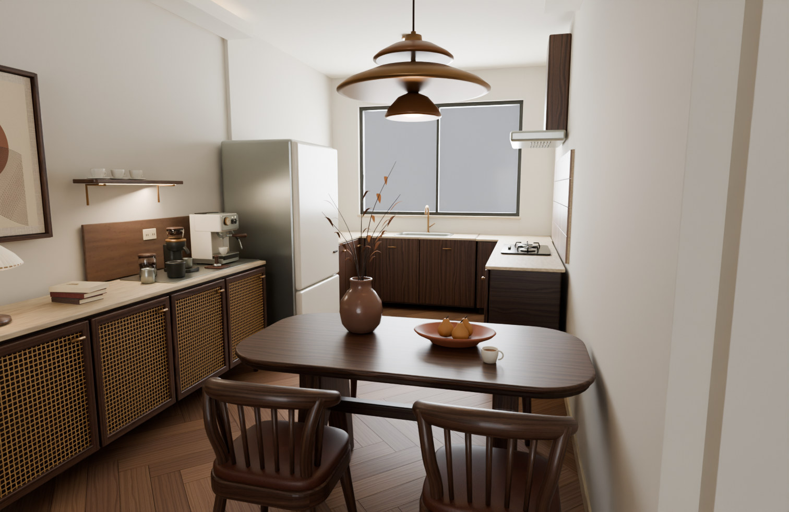
餐边柜兼作咖啡台。三层反光吊灯照亮桌面，北侧衔接 U 形厨房。
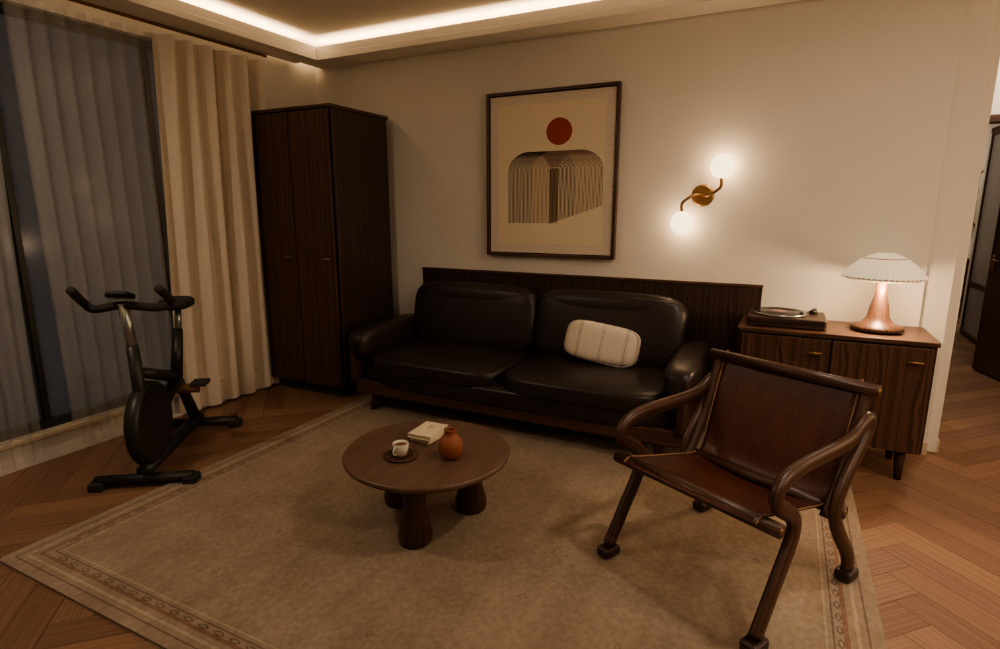
与日景相同的机位。壁灯与台灯照亮坐席，顶边灯槽勾出房间的轮廓。
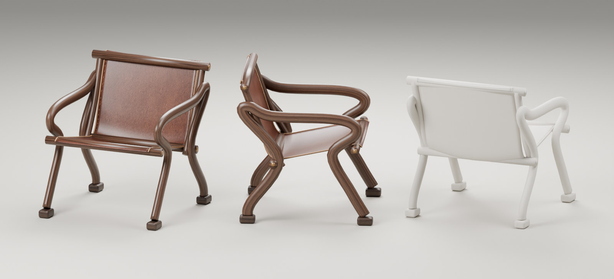
同一把椅子的正侧、侧面与背面。最右侧用灰模显示吊座和横档。
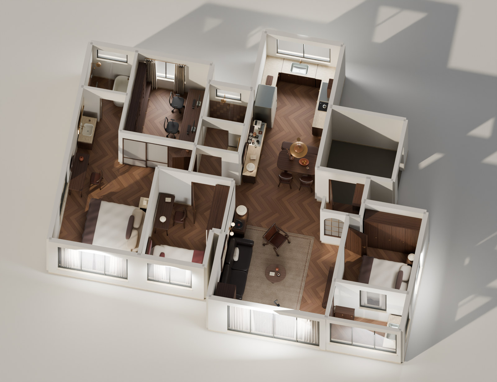
按原始家具布局图重建。户内人字拼从同一角起铺，电梯厅单列为公区。
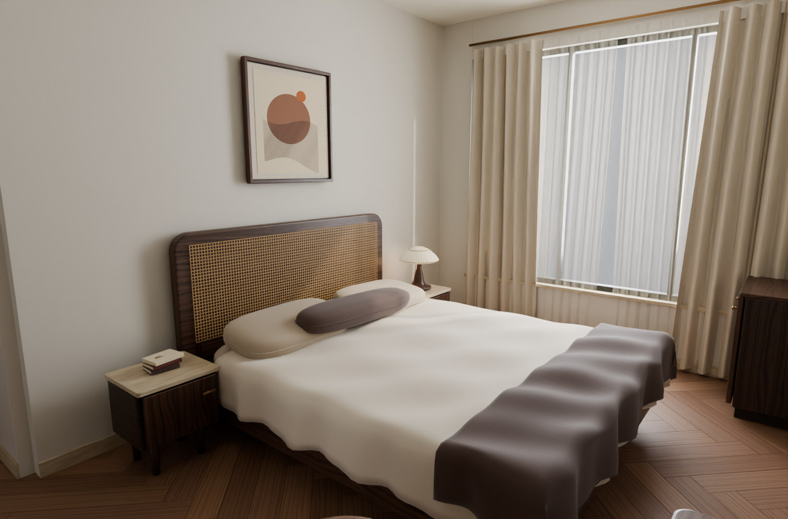
藤编床头、烟草褐床毯与落地亚麻帘。
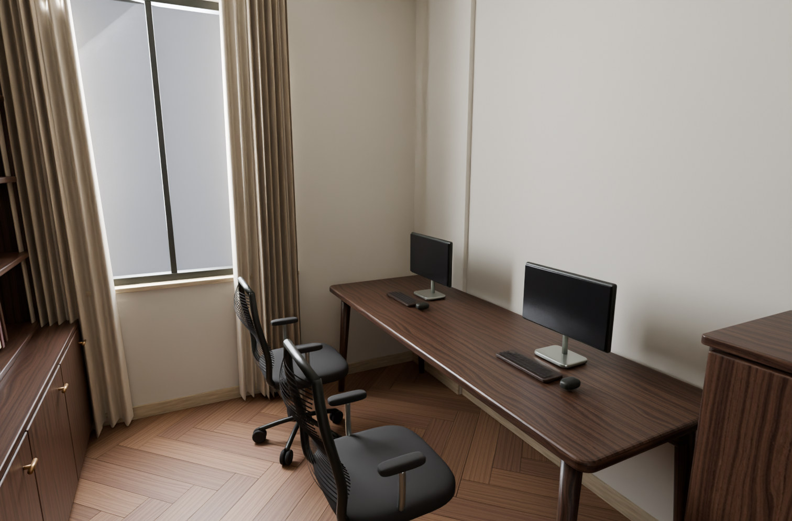
两套独立工位共用长桌，对面是整面开放书架。
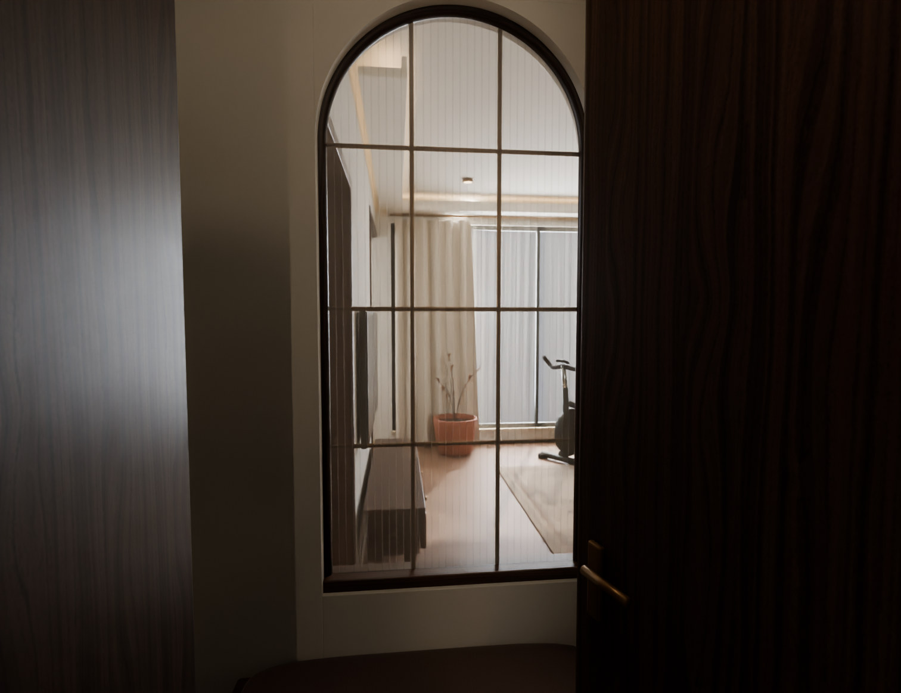
换鞋凳背后的拱形玻璃连通玄关和客厅的光线。